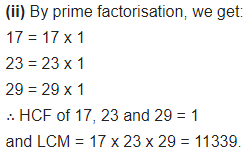
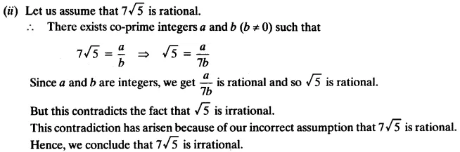
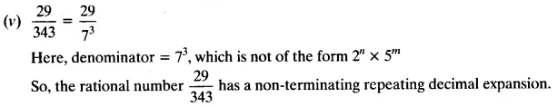
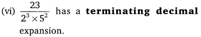

Class 10 Maths NCERT Solutions Chapter 1 Real Numbers
Get here Class 10 Maths NCERT Solutions Chapter 1 Real Numbers. These NCERT Solutions for Class 10 of Maths subject includes detailed answers of all the questions in Chapter 1 – Class 10 Real Numbers provided in NCERT Book which is prescribed for class 10 in schools.
Resource: National Council of Educational Research and Training (NCERT) Solutions
Class: 10th Class
Subject: Maths
Chapter: Chapter 1 – Real Numbers
- No of Exercises – 4 (Contains 17 Questions)
- Class 10 Real Numbers Ex 1.1 – 4 Questions Based on Euclid’s division lemma
- Class 10 Real Numbers Ex 1.2 – 7 Questions Based on Fundamental Theorem of Arithmetic, LCM and HCF
- Class 10 Real Numbers Ex 1.3 – 3 Questions Based on Rational and Irrational Numbers
- Class 10 Real Numbers Ex 1.4 – 3 Questions Based in which you have to expand fractions into decimals and write decimals in their fraction form.
Real Numbers Class 10 Ex 1.1
Question 1
Use Euclid’s division algorithm to find the HCF of :
(i) 135 and 225 (ii) 196 and 38220 (iii) 867 and 255
Solution:
(i) Given numbers are 135 and 225.
On applying Euclid’s division algorithm, we have
225 = 135 x 1 + 90
Since the remainder 90 ≠ 0, so again we apply Euclid’s division algorithm to 135 and 90, to get
135 = 90 x 1 + 45
Since the remainder 45 ≠ 0, so again we apply Euclid’s division algorithm to 90 and 45, to get
90 = 45 x 2 + 0
The remainder has now become zero, so we stop.
∵ At the last stage, the divisor is 45
∴ The HCF of 135 and 225 is 45.
Alternatively:
(i) By Euclid’s Division Algorithm, we have
225 = 135 x 1 + 90 135
= 90 x 1 + 45 90
= 45 x 2 + 0
∴ HCF (135, 225) = 45.
(ii) Given numbers are 196 and 38220
On applying Euclid’s division algorithm, we have
38220 = 196 x 195 + 0
Since we get the remainder zero in the first step, so we stop.
∵ At the above stage, the divisor is 196
∴ The HCF of 196 and 38220 is 196.
Alternatively:
(ii) By Euclid’s Division Algorithm, we have
38220 = 196 x 195 + 0
196 = 196 x 1 + 0
∴ HCF (38220, 196) = 196.
(iii) Given numbers are 867 and 255
On applying Euclid’s division algorithm, we have
867 = 255 x 3 + 102
Since the remainder 102 ≠ 0, so again we apply Euclid’s division algorithm to 255 and 102. to get
255 = 102 x 2 + 51
Since the remainder 51 ≠ 0, so again we apply Euclid’s division algorithm to 102 and 51, to get
102 = 51 x 2 + 0
We find the remainder is 0 and the divisor is 51
∴ The HCF of 867 and 255 is 51.
Alternatively:
(iii) 867 and 255
Step 1: Since 867 > 255,
apply Euclid’s division lemma, to a =867 and b=255 to find q and r
such that 867 = 255q + r, 0 ≤ r<255
On dividing 867 by 255 we get quotient as 3 and remainder as 102
i.e 867 = 255 x 3 + 102
Step 2: Since remainder 102 ≠ 0,
we apply the division lemma to a=255 and b= 102 to find whole numbers q and r
such that 255 = 102q + r where 0 ≤ r<102
On dividing 255 by 102 we get quotient as 2 and remainder as 51
i.e 255 = 102 x 2 + 51
Step 3: Again remainder 51 is non zero,
so we apply the division lemma to a=102 and b= 51 to find whole numbers q and r
such that 102 = 51 q + r where 0 r < 51
On dividing 102 by 51 quotient is 2 and remainder is 0
i.e 102 = 51 x 2 + 0
Since the remainder is zero, the divisor at this stage is the HCF
Since the divisor at this stage is 51,therefore, HCF of 867 and 255 is 51.
Concept Insight: To crack such problem remember to apply Euclid’s division Lemma which states that “Given positive integers a and b, there exist unique integers q and r satisfying a = bq + r, where 0 ≤ r < b” in the correct order.
Here, a > b. Euclid’s algorithm works since Dividing ‘a’ by ‘b’, replacing ‘b’ by ‘r’ and ‘a’ by ‘b’ and repeating the process of division till remainder 0 is reached, gives a number which divides a and b exactly.
i.e HCF(a,b) =HCF(b,r)
Note that do not find the HCF using prime factorization in this question when the method is specified and do not skip steps.
Question 2:
Show that any positive odd integer is of the form 6q + 1, or 6q + 3, or 6q + 5, where q is some integer.
Solution:
Let ‘a’ be any positive integer and b = 6.
∴ By Euclid’s division algorithm, we have
a = bq + r, 0 ≤ r ≤ b
a = 6q + r, 0 ≤ r ≤ b [ ∵ b = 6] where q ≥ 0 and r = 0,1, 2, 3, 4,5
Now, ‘a’ may be of the form of 6q, 6q + 1, 6q + 2, 6q + 3, 6q + 4, 6q + 5
If ‘a’ is of the form 6q, 6q + 2, 6q + 4 then ‘a’ is an even.
In above we can see clearly that the numbers of the form 6q, 6q + 2, 6q + 4 are having the factor 2.
∴ The numbers of the form 6q, 6q + 2, 6q + 4 are even.
If ‘a’ is of the form 6q +1,6q +3, 6q + 5 then ‘a’ is an odd.
As if
∵ We know that the number of the form 2k + 1 is odd.
∴ The numbers of the form 6q + 1, 6q + 3, 6q + 5 are odd.
Alternatively:
Let a be any odd positive integer we need to prove that a is of the form 6q + 1 , or 6q + 3 , or 6q + 5 , where q is some integer. Since a is an integer consider b = 6 another integer applying Euclid’s division lemma
we get a = 6q + r for some integer q ≤ 0, and r = 0, 1, 2, 3, 4, 5 since
0 ≤ r < 6.
Therefore, a = 6q or 6q + 1 or 6q + 2 or 6q + 3 or 6q + 4 or 6q + 5
However since a is odd so a cannot take the values 6q, 6q+2 and 6q+4
(since all these are divisible by 2)
Also, 6q + 1 = 2 x 3q + 1 = 2k1 + 1, where k1 is a positive integer
6q + 3 = (6q + 2) + 1 = 2 (3q + 1) + 1 = 2k2 + 1, where k2 is an integer
6q + 5 = (6q + 4) + 1 = 2 (3q + 2) + 1 = 2k3 + 1, where k3 is an integer
Clearly, 6q + 1, 6q + 3, 6q + 5 are of the form 2k + 1, where k is an integer.
Therefore, 6q + 1, 6q + 3, 6q + 5 are odd numbers.
Therefore, any odd integer can be expressed is of the form
6q + 1, or 6q + 3, or 6q + 5 where q is some integer
Concept Insight: In order to solve such problems Euclid’s division lemma is applied to two integers a and b the integer b must be taken in accordance with what is to be proved, for example here the integer b was taken 6 because a must be of the form 6q + 1, 6q + 3, 6q + 5.
Basic definition of even and odd numbers and the fact that addition and, multiplication of integers is always an integer are applicable here.
Question 3:
An army contingent of 616 members is to march behind an army band of 32 members in a parade. The two groups are to march in the same number of columns. What is the maximum number of columns in which they can march?
Solution:
Maximum number of columns = HCF of (616, 32)
For finding the HCF we should apply Euclid’s division algorithm
Given numbers are 616 and 32
On applying Euclid’s division algorithm, we have
616 = 32 x 19 + 8
Since the remainder 8 ≠ 0, so again we apply Euclid’s division algorithm to 32 and 8, to get
32 = 8 x 4 + 0
The remainder has now become zero, so we stop,
∵ At the last stage, the divisor is 8
∴ The HCF of 616 and 32 is 8.
Therefore, the maximum number of columns in which an army contingent of 616 members can march behind an army band of 32 members in a parade is 8.
Alternatively:
Let n be the number of columns such that the value of n be maximum and it must divide both the numbers 616 and 32.
Then, n = HCF (616, 32)
By Euclid’s Division Algorithm, we have:
616 = 32 x 19 + 8 32 = 8 x 4 + 0
∴ HCF (616, 32) = 8
i. e., n = 8
Hence, the maximum number of columns is 8.
Question 4:
Use Euclid’s division lemma to show that the square of any positive integer is either of the form 3m or 3m + 1 for some integer m.
[Hint : Let x be any positive integer then it is of the form 3q, 3q + 1 or 3q + 2. Now square each of these and show that they can be rewritten in the form 3m or 3m + 1.]
Solution:
Let ‘a’ be any positive integer and b = 3.
∴ By Euclid’s division algorithm, we have a = 3q + r, 0 ≤ r < b
a = 3q + r, 0 ≤ r < 3 [ ∵ b = 3] where q ≥ 0 and r = 0,1, 2
∴ a = 3q or 3q + 1 or 3q + 2
Now
Thus, the square of any positive integer is either of the form 3m or 3m + 1.
Alternatively:
Let a be a positive integer, q be the quotient and r be the remainder.
Dividing a by 3 using the Euclid’s Division Lemma,
we have:
a = 3q + r, where 0 ≤ r < 3
Putting r = 0, 1 and 2, we get:
a = 3q
⇒ a2 = 9q2
= 3 x 3q2
= 3m (Assuming m = q2)
Then, a = 3q + 1
⇒ a2 = (3q + l)2 = 9q2 + 6q + 1
= 3(3q 2 + 2q) + 1
= 3m + 1 (Assuming m = 3q2 + 2q)
Next, a = 3q + 2
⇒ a2 = (3q + 2)2 =9q2 + 12q + 4
= 9q2 + 12q + 3 + 1
= 3(3q2 + 4q + 1) + 1
= 3m + 1. (Assuming m = 3q2 + 4q+l)
Therefore, the square of any positive integer (say, a2) is always of the form 3m or 3m + 1.
Hence, proved.
Question 5:
Use Euclid’s division lemma to show that the cube of any positive integer is of the form 9m, 9m + 1 or 9m + 8.
Solution:
Let ‘a’ be any positive integer and b = 3.
∴ By Euclid’s division algorithm, we have a = bq + r,0 ≤ r ≤ b
a = 3q + r,0 ≤ r < 3 [ ∵ b = 3] where q ≥ 0 and r = 0. 1, 2
∴ a = 3q or 3q + 1 or 3q + 2
Now
Thus, the cube of any positive integer is of the form 9m, 9m + 1 or 9m + 8.
Alternatively:
Let a be a positive integer, q be the quotient and r be the remainder.
Dividing a by 3 using the Euclid’s Division Algorithm, we have,
a = 3q + r, where 0 ≤ r < 3
Putting r = 0, 1 and 2, we get:
a = 3q, a = 3q + 1 and a = 3q + 2
If a = 3q, then a3 = 27q3 = 9(3q3) = 9m. (Assuming m = 3q3.)
If a = 3q + 1, then
a3 = (3q + l)3 = 27q3 + 9q(3q + 1) + 1 = 9(3q3 + 3q2 + q) + 1 = 9m + 1, (Assuming m = 3q3 + 3q2 + q)
If a = 3q + 2, then a3 = (3q + 2)3
= 27q3 + 18q(3q + 2) + (2)3
= 9(3q3 + 6q2 + 4q) + 8
= 9m + 8, (Assuming m – 3q3 + 6q2 + 4q)
Hence, a3 is of the form 9m, 9m + 1 or 9m + 8.
Real Numbers Class 10 Ex 1.2
Question 1:
Express each number as a product of its prime factors:
(i) 140 (ii) 156 (iii) 3825 (iv) 5005 (v) 7429
Solution:
Alternatively:
Alternatively:
Alternatively:
Alternatively:
Alternatively:
Question 2:
Find the LCM and HCF of the following pairs of integers and verify that LCM × HCF = product of the two numbers.
(i) 26 and 91 (ii) 510 and 92 (iii) 336 and 54
Solution:
Alternatively:

Alternatively:
Alternatively:
Question 3:
Find the LCM and HCF of the following integers by applying the prime factorisation method.
(i) 12, 15 and 21 (ii) 17, 23 and 29 (iii) 8, 9 and 25
Solution:
(i) 12, 15 and 21
Method 1:
Alternatively:

Alternatively:

Alternatively:
Question 4:
Given that HCF (306, 657) = 9, find LCM (306, 657).
Solution:
Given that HCF (306, 657) = 9
We know that LCM x HCF = Product of two numbers
Alternatively:
Question 5:
Check whether 6n can end with the digit 0 for any natural number n.
Solution:
Since prime factorisation of 6n is given by 6n = (2 x 3)n = 2n x 3n
Prime factorisation of 6n contains only prime numbers 2 and 3.
6n may end with the digit 0 for some ‘n’ if 5 must be in its prime factorisation which is not present.
So, there is no natural number VT for which 6n ends with the digit zero.
Alternatively:
Question 6:
Explain why 7 × 11 × 13 + 13 and 7 × 6 × 5 × 4 × 3 × 2 × 1 + 5 are composite numbers.
Solution:
Method 1:
Both N1 and N2 are expressed as a product of primes. Therefore, both are composite numbers.
Alternatively:
Question 7:
There is a circular path around a sports field. Sonia takes 18 minutes to drive one round of the field, while Ravi takes 12 minutes for the same. Suppose they both start at the same point and at the same time, and go in the same direction. After how many minutes will they meet again at the starting point?
Solution:
Method 1:
By taking LCM of time taken (in minutes) by Sonia and Ravi, we can get the actual number of minutes after which they meet again at the starting point after both start at same point and of the same time, and go in the same direction.
Therefore, both Sonia and Ravi will meet again at the starting point after 36 minutes.
Real Numbers Class 10 Ex 1.3
Question 1.
Prove that √5 is irrational.
Solution:
Let us assume that is rational.
∴ There exists co-prime integers a and b (b ≠ 0) such that
√5 = \(\frac { a }{ b }\) ⇒ √5b= 0
Squaring on both sides, we get
5b2= a2…… (i)
⇒ 5 divides a2 ⇒ 5 divides a
So, we can write a = 5c for some integer c.
From (i) and (ii)
5b2 = 25c2
⇒ b2 = 5c2
⇒ 5 divides b2
⇒ 5 divides b
∴ 5 is a common factor of a and b.
But this contradicts the fact that a and b are co-primes.
This contradiction has arisen because of our incorrect assumption that √5 is rational.
Hence, √5 is irrational.
Alternatively:
Let √5 = \(\frac { p }{ q }\) be a rational number, where p and q are co-primes and q ≠ 0.
Then, √5q = p => 5q2=p2
⇒ p2 – Sq2 … (i)
Since 5 divides p2, so it will divide p also.
Let p = 5r
Then p2 – 25r 2 [Squaring both sides]
⇒ 5q2 = 25r2 [From(i)]
⇒ q2 = 5r2
Since 5 divides q2, so it will divide q also. Thus, 5 is a common factor of both p and q.
This contradicts our assumption that √5 is rational.
Hence, √5 is irrational. Hence, proved.
Question 2.
Show that 3 + √5 is irrational.
Solution:
Let us assume that 3 + 2√5 is rational.
∴ There exists co-prime integers a and b(b ≠ 0) such that
But this contradicts the fact that √5 is irrational.
This contradiction has arisen because of our incorrect assumption that 3 + 2√5 is rational. Hence, we conclude that 3 + 2√5 is irrational.
Alternatively:
Let 3 + 2√5 = \(\frac { p }{ q }\) be a rational number, where p and q are co-prime and q ≠ 0.
Then, 2√5 = \(\frac { p }{ q }\) – 3 = \(\frac { p – 3q }{ q }\)
⇒ √5 = \(\frac { p – 3q }{ 2q }\)
since \(\frac { p – 3q }{ 2q }\) is a rational number,
therefore, √5 is a rational number. But, it is a contradiction.
Hence, 3 + √5 is irrational. Hence, proved.
Question 3.
Prove that the following are irrational.
Solution:
Alternatively:
(i) Let \(\frac { 1 }{ \sqrt { 2 } }\) = \(\frac { p }{ q }\) be a rational number,
where p and q are co-prime and q ≠ 0.
Then, √2 = \(\frac { q }{ p }\)
Since \(\frac { q }{ p }\) is rational, therefore, √2 is rational.
But, it is a contradiction that √2 is rational, rather it is irrational.
Hence, \(\frac { 1 }{ \sqrt { 2 } }\) is irrational.
Hence, proved.

Alternatively:
(ii) Let 7√5 = \(\frac { p }{ q }\) be a rational number, where p, q are co-primes and q ≠ 0.
Then, √5 = \(\frac { p }{ 7q }\)
Since \(\frac { p }{ 7q }\) is rational therefore, √5 is rational.
But, it is a contradiction that √5 is rational rather it is irrational.
Hence, 7√5 s is irrational.
Hence proved.
Alternatively:
(iii) Let 6 + √2 = \(\frac { p }{ q }\) be a rational number, where p, q are co-primes and q ≠ 0.
Then, √2 = \(\frac { p }{ q }\) – 6 = \(\frac { p – 6q }{ q }\)
Since \(\frac { p – 6q }{ q }\) is rational therefore, √2 is rational.
But, it is a contradiction that √2 is rational, rather it is irrational.
Hence, 6 + √2 is irrational.
Real Numbers Class 10 Ex 1.4
Question 1:
Without actually performing the long division, state whether the following rational numbers will have a terminating decimal expansion or non-terminating repeating decimal expansion:
Solution:
Alternatively:
Alternatively:
Alternatively:
Alternatively:

Alternatively:
Alternatively:

(vii)
Alternatively:
(Viii)
Alternatively:
(ix)
Alternatively:
(x)
Alternatively:
Question 2.
Write down the decimal expansions of those rational numbers in the question 1, which have terminating decimal expansions.
Solution:
Alternatively:
Question 3:
The following real numbers have decimal expansions as given below. In each case, decide whether they are rational or not. If they are rational and of the form \(\frac { p }{ q }\), what can you say about the prime factors of q ?
(i) 43. 123456789
(ii) 0.120120012000120000…
(iii) 43. \(\overline { 123456789 }\)
Solution:
(i) 43.123456789
Since the decimal expansion terminates,so the given real number is rational and therefore of the form \(\frac { p }{ q }\)
Here, q = 29 x 59, So prime factorisation of q is of the form 2n x 5m.
Alternatively:
(i) 43.123456789
Here, the denominator is of the form 2m5n.
Hence, the number is a rational number, specifically a terminating decimal.
(ii) 0.120120012000120000…
Since the decimal expansion is neither terminating nor non-terminating repeating, therefore the given real number is not rational.
Alternatively:
(ii) Since the given decimal number is non terminating non-repeating, it is not rational
(iii) 43. \(\overline { 123456789 }\)
Since the decimal expansion is non-terminating repeating, therefore the given real number is rational and therefore of the form \(\frac { p }{ q }\)
Let x = 43. \(\overline { 123456789 }\) = 43.123456789123456789… ….(i)
Multiply both sides of (i) by 1000000000, we get
Alternatively:
(iii) Since the given decimal number is nonterminating repeating, it is rational, but the denominator is not of the form 2m5n.
Class 10 Real Numbers Summary
We have studied the following points:
1. Euclid’s Division Lemma: Given positive integers a and b, there exist whole numbers q and r satisfying a = bq + r where 0 = r = b.
2. Euclid’s Division Algorithm: According to this, which is based on Euclid’s division lemma, the HCF of any two positive integers a and b with a > b is obtained as follows:
Step 1 Apply the division lemma to find q and r where a = bq + r, O = r < b.
Step 2 If r = 0, the HCF is b . If r? 0 apply Euclid Lemma to b and r
Step 3 Continue the process until the remainder is zero. The divisor at this stage will be HCF (a, b). Also HCF (a, b) = HCF (b, r)
3. The Fundamental Theorem of Arithmetic: Every composite number can be expressed (factorized) as a product of primes and this factorization is unique, apart from the order in which the prime factors occur.
4. If p is a prime and p divides a2, then p divides a also, where a is a positive integer.
5. If x is any rational number whose decimal expansion terminates, then we can express x in the form p/q, where p and q are coprime, and the prime factorisation of q is of the form 2m 5n where m, n are non-negative integers.
6. Let x = p/q be a rational number, such that the prime factorisation of q is of the form 2m 5n where m, n are non-negative integers, then x has a decimal expansion which terminates
7. Let x = p/q be a rational number, such that the prime factorisation of q is not of the form – 2m 5n, where m, n are non-negative integers, then x has a decimal expansion which is non-terminating repeating (recurring)
8. To Prove √3 Rational Number.
Class 10 Maths Real numbers Mind Map
Euclid’s Division Lemma
For given any two positive integers a and b, there exist unique integers q and r satisfying
a = bq + r, 0 ≤ r < b
Lemma: A lemma is a proven statement used for proving another statement.
Euclid’s Division Algorithm
Euclid’s division algorithm is a technique to compute the Highest Common Factor (HCF) of two given positive integers. To get HCF of two positive integers c and d, c > d following steps are to be followed:
(i) Apply Euclid’s division lemma to c and d to get whole numbers q and r such that
c = dq + r, 0 ≤ r < d.
(ii) If r = 0, then d is HCF of c and d. If r ≠ 0. apply division lemma to d and r.
(iii) Continue the process till the remainder is zero. The divisor at this stage will be the required HCF.
Note:
(i) Euclid’s division lemma and algorithm are so closely interlinked that people often call former as the division algorithm also.
(ii) Euclid’s division algorithm is stated for only +ve integers but it can be extended for all integers except zero.
Fundamental Theorem of Arithmetic
Every composite number can be expressed (factorised) as a product of primes, and this factorisation is unique, apart from the order in which the prime factors occur.
The prime factorisation of a natural number is unique, except for the order of its factors. In general, given a composite number x, we factorise it as
x = P1P2P3…… pn, where p1, p2, p3……. ,pn are primes and written in ascending order, i.e.,
p1 ≤ p2 ≤ p3……pn. If we combine the same primes, we will get powers of primes.
For Example:
So, in each of the cases prime factors of 156 is 2 × 2 × 3 × 13
Hence, we can conclude that the prime factorisation of a number is unique.
Note:
(i) For two positive integers a, b
HCF (a, b) × LCM (a, b) = a × b
(ii) If p is a prime number and it divides a2, then p also, divides a where ‘a’ is the positive integer.

HCF and LCM of Three Numbers

Note:
For three positive integers a, b and c
HCF (a, b, c) × LCM (a, b, c) ≠ a × b × c
Irrational Numbers
Number which is not a rational number or whose decimal expansion is non-terminating and non-repeating
Note:
(i) The sum or difference of a rational and an irrational number is irrational, e.g.,
2 + √2 is irrational,
2 – √3 is irrational.
(ii) The product and quotient of a non-zero rational and irrational number is irrational, e.g.,
5 × √2 is irrational
\(\frac{\sqrt{2}}{3}\) is irrational
Rational Numbers and Their Decimal Expansion
(i) If denominator of a rational number is of the form 2n 5m, where n, m are non-negative integers then x has decimal expansion which terminates.
(ii) If decimal expansion of rational number terminates then its denominator has prime factorisation of the form 2n 5m, where n, m are non-negative integers.
(iii) If denominator of a rational number is not of the form 2n 5m, where n and m are non-negative integers then the rational number has decimal expansion which is non-terminating repeating.
Thus we conclude that the decimal expansion of every rational number is either terminating or non-terminating repeating.
NCERT Solutions for Class 10 Maths
- Chapter 1 Real Numbers
- Chapter 2 Polynomials
- Chapter 3 Pair of Linear Equations in Two Variables
- Chapter 4 Quadratic Equations
- Chapter 5 Arithmetic Progressions
- Chapter 6 Triangles
- Chapter 7 Coordinate Geometry
- Chapter 8 Introduction to Trigonometry
- Chapter 9 Some Applications of Trigonometry
- Chapter 10 Circles
- Chapter 11 Constructions
- Chapter 12 Areas Related to Circles
- Chapter 13 Surface Areas and Volumes
- Chapter 14 Statistics
- Chapter 15 Probability